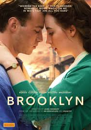
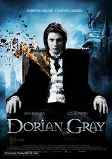
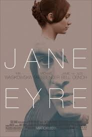
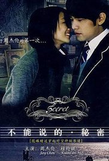

Brooklyn | |
|---|---|
|  |
An Irish immigrant lands in 1950s Brooklyn, where she quickly falls into a romance with a local. When her past catches up with her, however, she must choose between two countries and the lives that exist within. StorylineIreland, early-1950s. Eilis Lacey is a young woman working in a grocery shop. She has greater ambitions and moves to Brooklyn, New York, leaving her mother and sister, Rose, behind. She is terribly homesick but eventually settles down, finding a job, studying to be a bookkeeper and meeting a nice young man, Tony. Things are going well but then she learns that Rose has died, and decides to return to Ireland, temporarily. She and Tony hastily get married and then she sets off back to Ireland, alone. Life is about to get complicated |
CastSaoirse Ronan, Hugh Gormley, Brid Brennan, Maeve McGrath | |
Keywordsirish immigrant | immigrant | 1950s | irish accent | torn between two worlds | |
Dorian Grey | |
|---|---|
|  |
A corrupt young man somehow keeps his youthful beauty eternally, but a special painting gradually reveals his inner ugliness to all. StorylineA naïve young man. A lovelorn artist. A corruptible Lord. A deal with the Devil. It all paints a dark picture of a Victorian London and how the rich and infamous party at their peril. Here, the telling of time and its consequence of experience for life's treasures' takes its toll on the body, mind and soul. The haunting and bleak tale of power, greed, vanity and inevitable self-destruction is ever present amongst the deceit, opium dens and sin. |
CastBen Barnes, John Hollingworth, Cato Sandford, Fiona Shaw | |
Keywordsdorian gray | reference to dorian gray | reference to the picture of dorian gray | reference to the picture of dorian gray the novel | eternal youth | |
Jane Eyre | |
|---|---|
|  |
A mousy governess who softens the heart of her employer soon discovers that he's hiding a terrible secret. StorylineAfter a bleak childhood, Jane Eyre goes out into the world to become a governess. As she lives happily in her new position at Thornfield Hall, she meets the dark, cold, and abrupt master of the house, Mr. Rochester. Jane and her employer grow close in friendship and she soon finds herself falling in love with him. Happiness seems to have found Jane at last, but could Mr. Rochester's terrible secret be about to destroy it forever? |
CastMia Wasikowska, Jamie Bell, Su Elliot, Holliday Grainger | |
Keywordssecret | governess | friendship | f rated | horseback riding | |
Secret | |
|---|---|
|  |
Ye Xiang Lun, a talented piano player is a new student at the prestigious Tamkang School. On his first day, he meets Lu Xiao Yu, a pretty girl playing a mysterious piece of music. StorylineYe Xiang Lun is a music student majoring in piano who just transferred to Tamkang, a school famous for its musically talented students, especially those who play piano. On his first day of school, he hears a mysterious melody being played, and following it meets Lu Xiao Yu, another piano major. When he asks her about the song she was playing, she tells him that it is a secret that cannot be told. The two form a friendship that quickly evolves into a romantic relationship. However unbeknownst to Xiang Lun, there is more to Xiao Yu than initially meets the eye. |
CastJay Chou, Lun-Mei Kwei, Anthony Chau-Sang, Wong, Kai-Syuan Tzeng | |
Keywordspiano | school | piano player | feature film directorial debut | directorial debut | |